APEX est un cabinet d’expertises scientifiques et techniques basé en Polynésie française, fondé en 2026. Il accompagne les acteurs publics et privés dans l’acquisition,
l’analyse et la valorisation de données scientifiques afin de fiabiliser les diagnostics, éclairer l’action et optimiser les pratiques. À la croisée de la recherche scientifique et des réalités de terrain,
le cabinet propose des solutions mesurables, robustes et directement mobilisables, de l’échantillonnage à l’aide à la décision. APEX se distingue par sa capacité à transformer rapidement
des données complexes en éléments directement exploitables pour l’action publique et opérationnelle, avec un haut niveau d’exigence scientifique.
Piloté par le Dr. Tony Manutea Gardon, APEX s’appuie sur plus de dix ans d’expérience en recherche fondamentale et en R&D appliquée, ainsi que sur un ancrage local fort, fondé sur une
connaissance fine du terrain acquise en ayant grandi et évolué à Tahiti et Moorea, et sur un réseau opérationnel multi-acteurs.
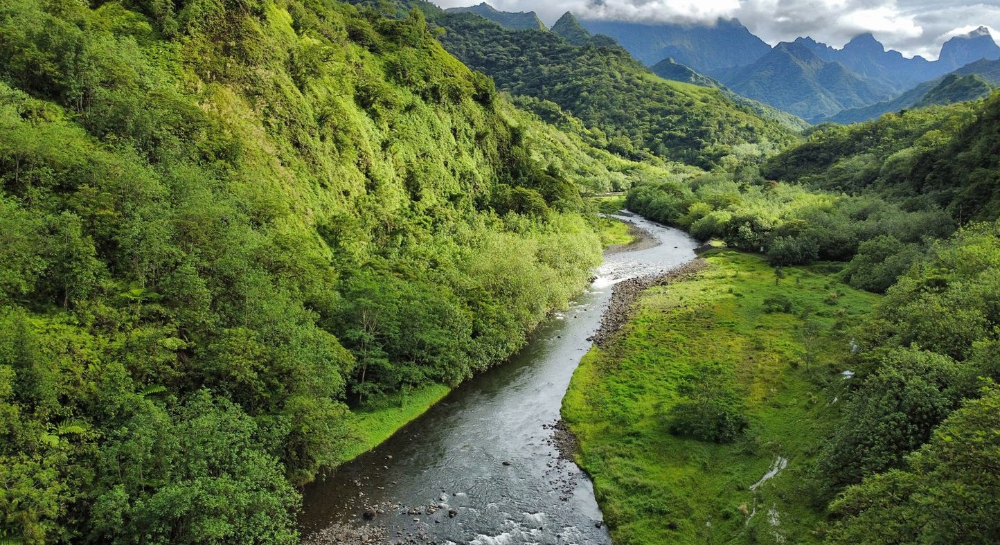
2023–2025 — Projet SCIESTA (UPF/UMR SECOPOL) — Dimensionnement d’un réseau de surveillance des contaminants d'intérêt émergent aux embouchures des rivières de Tahiti
Le projet SCIESTA visait le dimensionnement dʼun réseau de surveillance environnementale dédié aux contaminants d'intérêt émergent (microplastiques, métaux lourds et polluants organiques persistants,
incluant les pesticides) au niveau des zones d’embouchure du continuum terre–mer sur l’île de Tahiti, incluant leur évaluation dans les compartiments sédimentaires marins. Le projet
s’inscrivait dans une démarche de structuration méthodologique fondée sur l’analyse des pressions anthropiques, la représentativité environnementale des sites et la comparabilité spatiale des dispositifs de suivi.
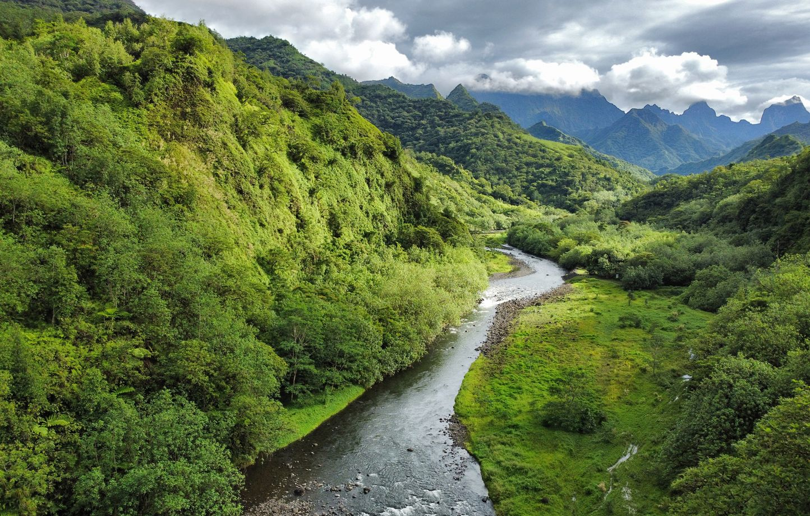
2023–2025 (UPF) — Enseignements à l'Université de la Polynésie française auprès d’étudiants de L2 et L3 parcours Sciences et Vie
Unités d'enseignement dispensées : biochimie des macromolécules, écotoxicologie, écosystèmes marins, exploitation des ressources naturelles, gestion des écosystèmes, stratégies d’échantillonnage.
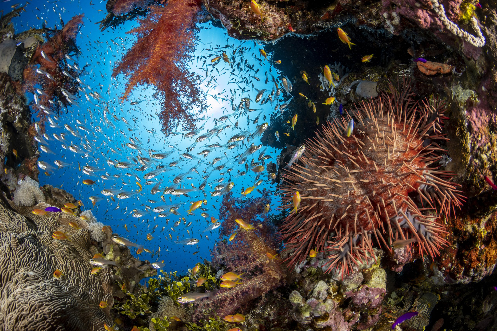
2023 (EPHE/CRIOBE) — Contribution à un ouvrage scientifique
Valorisation de plus de dix années de recherche menées dans le cadre du LABEX CORAIL « les récifs coralliens face au changement global » — Rédaction du chapitre 6 : « Vulnérabilité des récifs coralliens
face aux contaminants d'intérêt émergent » dans The Future of Coral Reefs, ouvrage de la série Coral Reefs of the World (Springer Nature). Ce travail avait pour objectifs la synthèse
scientifique orientée vers les recherches futures et le transfert de connaissances au service des stratégies de gestion des écosystèmes coralliens.
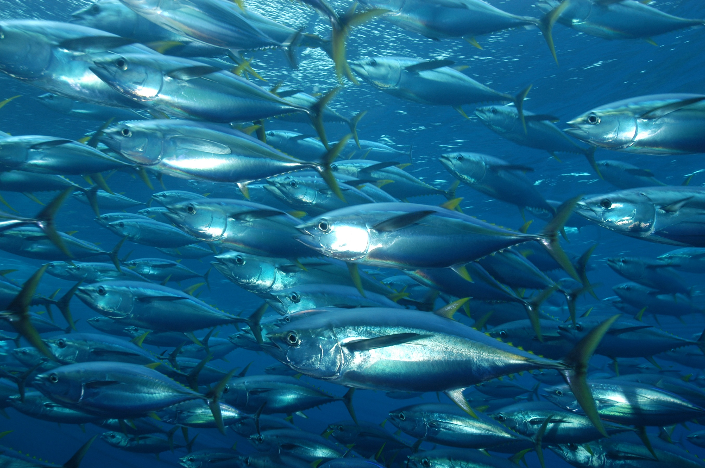

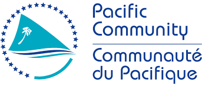
2022 — Projet TIPTOP (IRD/UMR LEMAR) — Évaluation de la contamination micro/nanoplastique et chimique chez le thon jaune et la bonite de l'Océan Pacifique Sud
Projet TIPTOP, co-financé par lʼIRD et la Communauté du Pacifique (CPS), visait à évaluer la contamination par les micro/nanoplastiques et les contaminants chimiques
(additifs plastiques et métaux lourds) chez des espèces pélagiques d'intérêt halieutique majeur — la bonite (Katsuwonus pelamis) et le thon jaune (Thunnus albacares)
— dans le Pacifique Sud, en Papouasie-Nouvelle-Guinée et en Nouvelle-Calédonie. Ce travail répondait à une double problématique : un enjeu sanitaire, compte tenu de la
forte consommation de ces espèces dans le Pacifique, et un enjeu de durabilité des ressources, lié aux risques écotoxicologiques susceptibles d’affecter les populations
exploitées. Le projet reposait sur la mise en œuvre de chaînes analytiques complexes appliquées à des matrices biologiques, intégrant des contraintes méthodologiques et analytiques élevées.
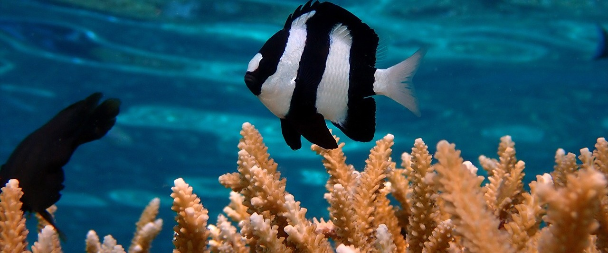
2021 — Projet PLASTICOR (EPHE/CRIOBE) — Étude de la variabilité spatio-saisonnière du microbiome d'organismes récifaux le long d'un grandient d'anthropisation
Le projet PLASTICOR visait à caractériser l’état de santé des écosystèmes récifaux à travers une approche multi-espèces, basée sur des outils de métabarcoding. L’étude a été conduite dans
le lagon de Ahe (Tuamotu), le long d’un gradient d’anthropisation lié à l’intensité de l’activité perlicole. Le dispositif expérimental reposait sur une structuration spatiale fine des sites d’étude et
sur la prise en compte de la variabilité saisonnière, afin de relier les signatures physico-chimiques et biologiques — incluant le microbiome associé aux coraux (Acropora millepora),
poissons (Dascyllus aruanus) et huîtres (Pinctada margaritifera), ainsi que l’ADNe de l’eau de mer — aux usages et pressions exercés sur le milieu. Ces travaux ont mis en évidence une
dégradation spatio-saisonnière des microbiotes en zones de perliculture, associée à des signatures physico-chimiques de l'eau, indiquant un état écologique altéré et des taxons bioindicateurs potentiels.
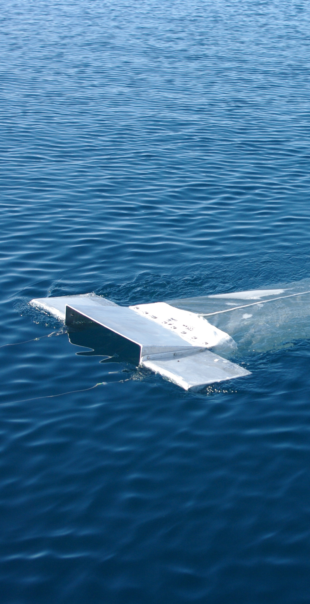
2017–2020 — Projet MICROLAG (IFREMER/UMR SECOPOL) — Évaluation de la contamination en microplastiques dans les lagons polynésiens et de leurs impacts sur l'huître perlière
Le projet MICROLAG, cofinancé par la Direction des Ressources Marines (DRM) et l’IFREMER, visait à caractériser pour la première fois la contamination en microplastiques dans les lagons perlicoles de
Polynésie française et à en évaluer les impacts biologiques et fonctionnels sur l’huître perlière (Pinctada margaritifera) et la qualité de la perle, dans un contexte d’accumulation historique
de structures plastiques liées à la perliculture. L’étude s’est appuyée sur des campagnes d’échantillonnage multi-sites (eau de surface, colonne d’eau, huîtres) menées dans cinq lagons (Ahe, Manihi,
Takaroa, Takapoto, Mangareva), révélant une contamination généralisée. Des expérimentations contrôlées ont mis en évidence des effets significatifs des micro/nanoplastiques sur la physiologie des
huîtres, ainsi que sur la qualité de la perle via des altérations de la microstructure nacrière. En parallèle, une approche toxicologique a démontré le potentiel de lixiviation des plastiques
perlicoles, avec une désorption significative d’additifs, entraînant des effets délétères sur le développement embryo-larvaire de P. margaritifera. Ces résultats indiquent que les structures
plastiques en perliculture constituent des sources actives de micro/nanoplastiques et de contaminants chimiques dans les lagons. Les travaux ont donné lieu à plusieurs publications de référence en
écotoxicologie des microplastiques, ainsi qu’à la mise au point de protocoles expérimentaux robustes et innovants, repris par des équipes partenaires. Ils ont également contribué à la réflexion
institutionnelle sur l’usage des plastiques en perliculture, participant à l’émergence de mesures réglementaires et de projets visant à réduire l’empreinte environnementale du secteur.
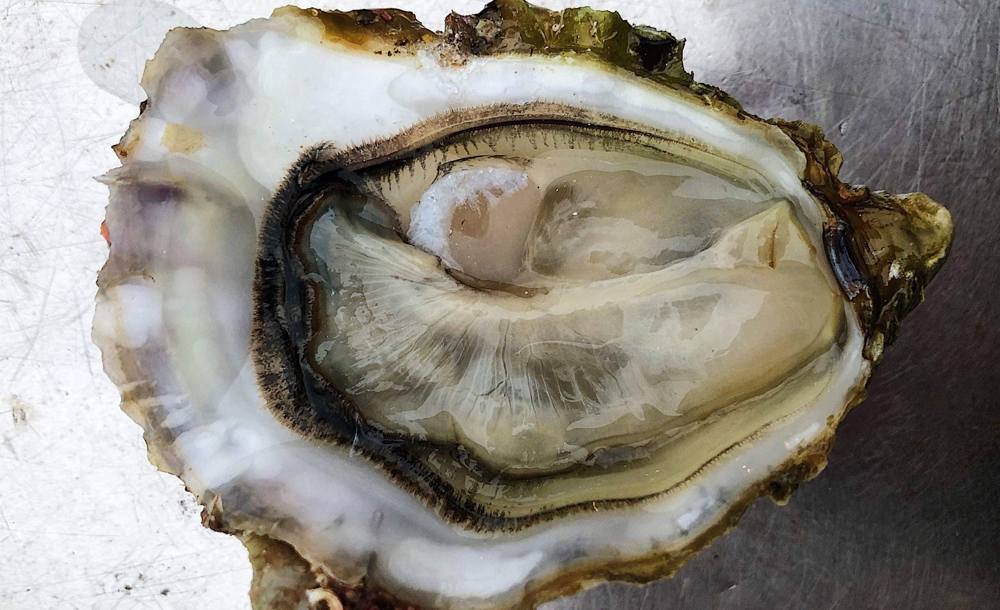
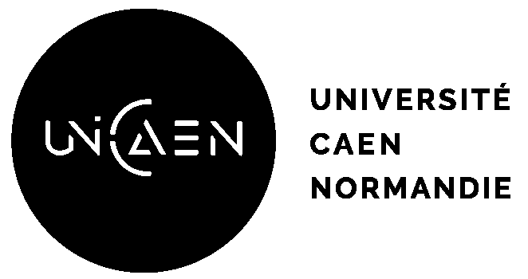
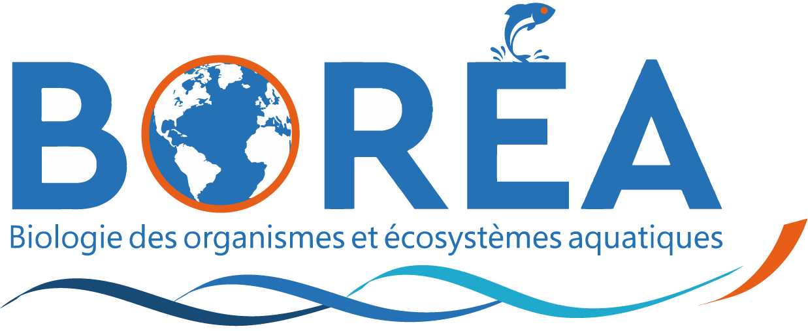
2016 (UCN/UMR BOREA) — Mise en place de la gonade au cours du développement de l’huître creuse
L’huître creuse (Crassostrea gigas), hermaphrodite successif, initie son déterminisme sexuel dès le stade juvénile post-métamorphose, bien que les mécanismes cellulaires associés restent encore
mal connus. Ce travail visait à identifier les cellules germinales primordiales (CGP) chez des juvéniles précoces et à caractériser la différenciation gonadique à des stades plus avancés. L’expression
de la protéine NANOS (marqueur des CGP), étudiée en immunofluorescence après mise au point du protocole, a révélé un marquage cytoplasmique en amas cellulaires proches de la masse viscérale, suggérant
la présence de CGP. L’immunohistochimie (NANOS, β-caténine) a montré leur expression dans les cellules gonadiques précoces et différenciées, avec une implication de la β-caténine dans la différenciation ovarienne.
Malgré la nécessité d’optimisations complémentaires, ce travail a permis de mieux comprendre la mise en place de la gonade chez les juvéniles et les mécanismes cellulaires du déterminisme sexuel, contribuant
à l’amélioration des connaissances en biologie et en ostréiculture.
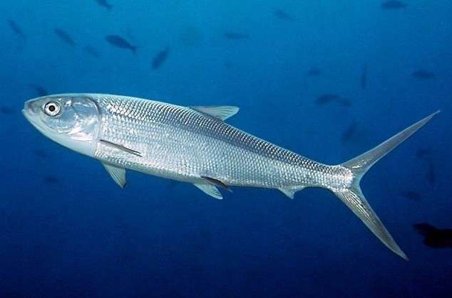
2015 (DRM) — Projet pilote — Première ferme d'élevage de Chanos chanos en Polynésie française sur l'atoll de Rangiroa
Malgré un potentiel reconnu pour le développement de l’aquaculture locale, le Ava (Chanos chanos) ne fait l’objet d’aucune production en Polynésie française. Ce travail visait à poser
les bases d’un projet pilote de ferme aquacole, en intégrant à la fois les connaissances biologiques de l’espèce, ses modalités d’élevage et les contraintes techniques et économiques associées. Le projet,
localisé sur l’atoll de Rangiroa, reposait sur une stratégie de grossissement en lagon afin de limiter la pression foncière et de réduire les coûts liés à l’alimentation. L’analyse technico-économique a
permis de structurer un business plan détaillé, mettant en évidence une rentabilité dès la deuxième année, sous réserve d’une production minimale d’environ 20 tonnes par an. Toutefois, l’absence d’étude de
marché limitait les perspectives de développement à moyen terme. Ce travail a néanmoins constitué une première base opérationnelle pour le déploiement d’une filière d’élevage de Chanos chanos en
Polynésie française.
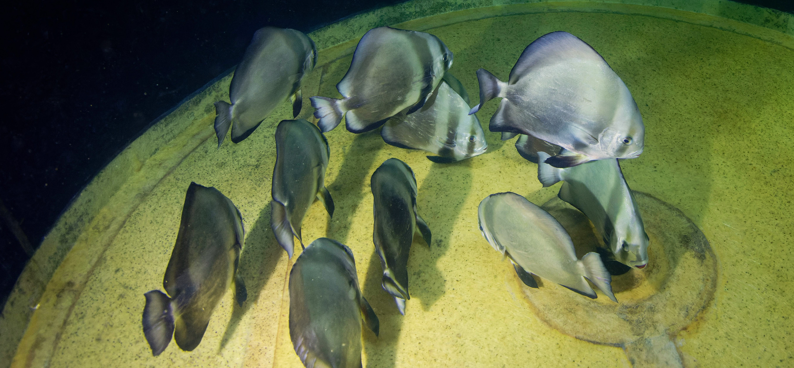
2015 (DRM) — Géniteurs de Paraha peue : un levier clé pour l’optimisation de la pisciculture polynésienne — Analyse des performances de ponte et optimisation de l’incubation des œufs
Ce travail s’articulait autour de deux objectifs : (1) la structuration d’une base de données centralisant l’ensemble des pontes de Platax orbicularis depuis 2004, afin d’identifier les facteurs influençant
les performances reproductives, et (2) le développement d’une méthode d’incubation des œufs permettant d’estimer de manière fiable le taux d’éclosion tout en limitant les manipulations au démarrage des
élevages larvaires. La base de données, construite à partir des archives de la DRM, a permis de mettre en évidence une amélioration des performances de ponte avec l’âge des géniteurs, ainsi qu’un
sexe-ratio optimal. En parallèle, la comparaison de plusieurs méthodes d’incubation a permis d’identifier une approche innovante d’incubation indirecte « jumelée », combinant les avantages des méthodes
directe et indirecte. Les résultats ont montré que les protocoles de comptage étaient fiables, bien que des pertes non quantifiables en fin d’essai, probablement liées à la dégradation
des œufs non éclos et des larves mortes, aient pu biaiser les estimations initiales. Ces travaux ont ainsi permis de mieux comprendre les déterminants des performances reproductives des géniteurs et de
proposer des solutions opérationnelles pour améliorer la gestion des élevages larvaires en pisciculture de Paraha peue.
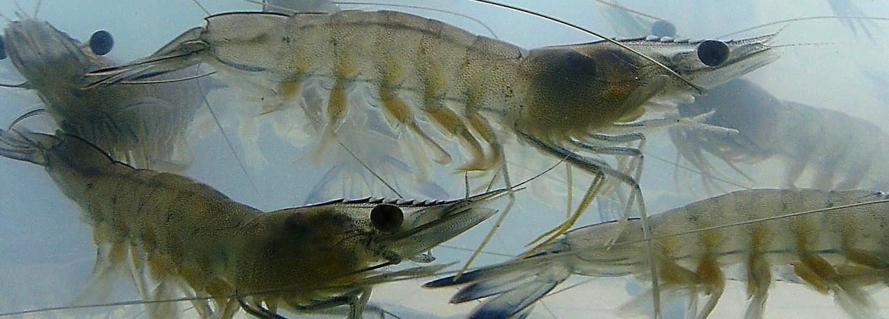
2013 (AQUAPAC) — Zootechnie et optimisation des pratiques d'élevage de la crevette bleue Litopenaus stylirostris
Ce travail s’inscrivait dans une immersion opérationnelle au sein de la filière crevetticole polynésienne, centré sur l’élevage de la crevette bleue (Litopenaeus stylirostris), réalisé chez AQUAPAC. Il
visait à maîtriser les pratiques zootechniques mises en œuvre en conditions de production, ainsi que les dimensions économiques et financières associées à l’exploitation. Dans ce cadre, un projet d’optimisation
a été conduit afin d’améliorer la rentabilité des systèmes d’élevage. Il s’est notamment appuyé sur une meilleure gestion de la période d’assec (travail des sols par hersage) et sur la mise en place d'un protocole
d’acclimatation des post-larves issues de l’écloserie territoriale (VAIA) avant leur ensemencement en bassins. Ces travaux ont permis d’identifier des leviers concrets d’amélioration des performances de production,
en renforçant à la fois la robustesse des pratiques zootechniques et l’efficacité globale du système d’élevage.